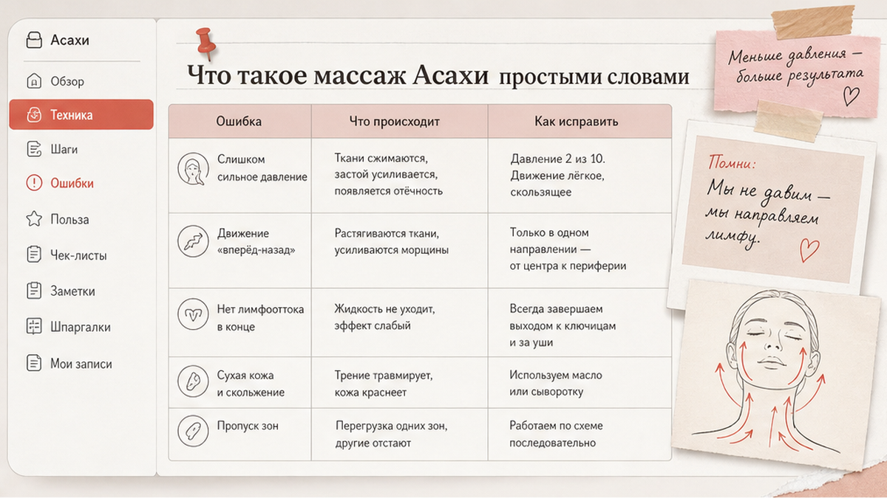
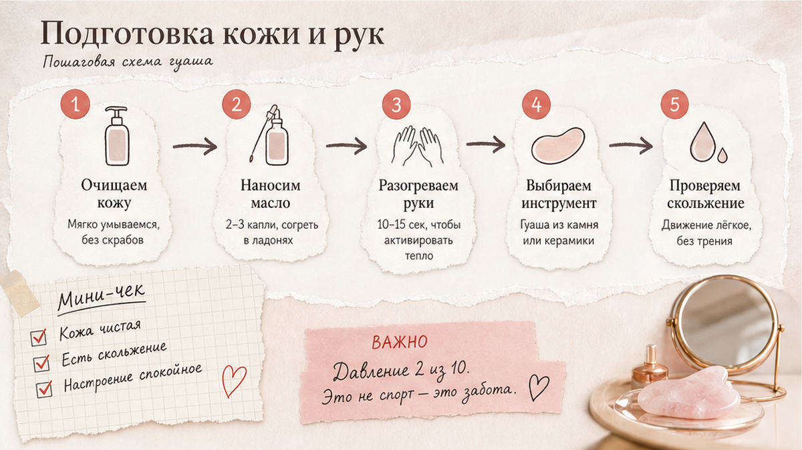
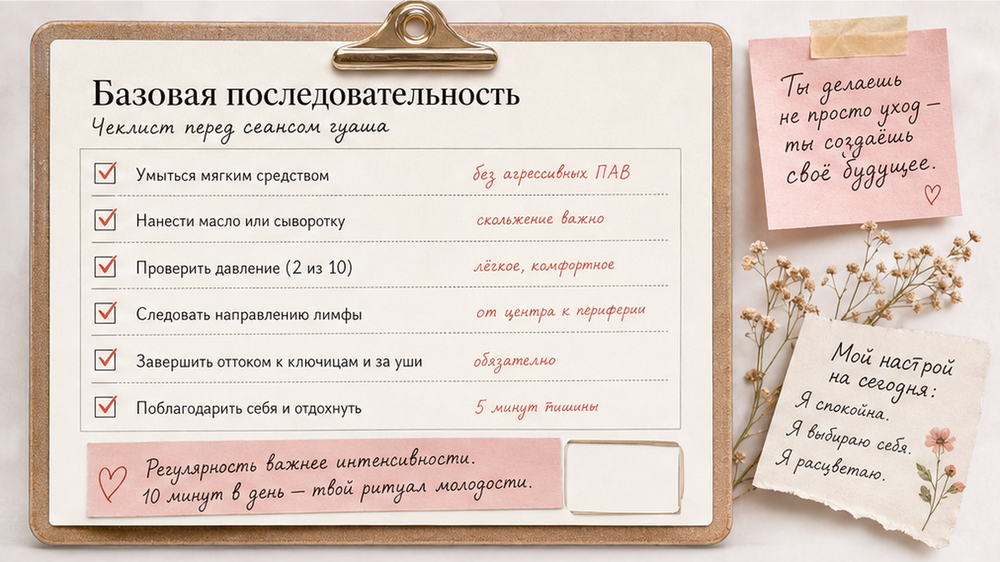

Массаж Асахи (Зоган) часто называют "секретом японских женщин", но на практике это не магия, а понятная схема: мягко разогнать застой лимфы, снять зажим с мышц и вернуть лицу спокойный контур без силового давления. Если делать технику дома правильно, уже через 2–3 недели кожа обычно выглядит свежее, а утренние отёки - легче. Ниже - как подготовиться, пройти базовую последовательность за 8–12 минут и не навредить коже.
Я использую Асахи как ежедневный ритуал "сброса напряжения", а не как замену ухода. Методика популяризирована японским практиком Yukuko Tanaka: движения идут по лимфотоку, давление минимальное, акцент на расслаблении привычной мимики. Зоган переводится как "создание лица" - то есть мягкая работа с контуром, а не агрессивное "вправление костей".

Асахи - это японская техника ручного массажа лица, где главная задача - улучшить отток лимфы и снять хронический тонус мышц. Лимфа - это "система дренажа" тканей: когда она застаивается, лицо утром выглядит одутловатым, а контур - размытым. Многие женщины замечают, что после правильной сессии щеки "лежат" ровнее, а взгляд - отдохнувший.
Зоган работает в трёх плоскостях: кожа, поверхностные мышцы, зона вдоль лимфоузлов у ушей и на шее. Движения всегда от центра лица к периферии и дальше к ключицам. Если чувствуете боль или покраснение - вы давите слишком сильно. Это не соревнование на силу, а работа с привычным зажимом.
Отличие от случайного "помассировала щёки": в Асахи есть порядок зон и направление. Без этого эффект слабый, а кожа может раздражаться от хаотичного трения.

Перед стартом уберите макияж, вымойте руки и подготовьте средство скольжения: 2–3 капли масла или лёгкой эмульсии на всё лицо. Работайте сидя, спина прямая, плечи опущены, челюсть расслаблена.
Тест на давление за 20 секунд:
Не начинайте сессию на сухой коже и не используйте скраб в тот же день. При куперозе или розацеа сначала сделайте тест на маленьком участке и при покраснении отложите технику.
Если не уверены в типе кожи и скольжении, пройдите короткую диагностику типа кожи - так проще подобрать масло или эмульсию без лишнего жира.

Базовый протокол на 8–12 минут. Давление - 2–3 из 10, темп медленный, без рывков. Каждый проход - 4–6 повторов.
После сессии нанесите привычный уход без кислот и ретинола в этот же вечер. Если кожа краснеет дольше 20–30 минут - сократите время и давление. Запишите в заметки, какая зона реагирует сильнее: чаще всего это носогубка и подбородок, и там нужно меньше повторов.
Для старта достаточно 3–4 сессий в неделю по 8–12 минут. Ежедневный режим имеет смысл только при спокойной коже и отсутствии раздражения. Оставьте 1–2 дня отдыха, чтобы ткани восстановились. Утро и вечер оба подходят: утром - против отёка, вечером - против дневного зажима от стресса и экрана.
Остановитесь, если есть острые воспаления, герпес, свежие раны, обострение розацеа или недавние аппаратные процедуры. При хронических заболеваниях кожи сначала согласуйте метод с дерматологом. Если после двух недель регулярности кожа только краснеет - снизьте частоту до 2 раз в неделю и пересмотрите средство скольжения.
Чеклист перед стартом: проверьте скольжение, снизьте давление до 2–3/10, ведите движения к шее, избегайте боли и покраснения, не делайте сессию при воспалении.
| Ошибка | Что происходит | Как исправить |
|---|---|---|
| Сильное давление | Купероз, отёки, боль на следующий день | Рабочий предел 2–3/10, медленный темп |
| Движения "к центру" | Застой лимфы усиливается | Вести от носа/подбородка к ушам и шее |
| Сухая кожа | Микротравмы, шелушение | Масло или эмульсия до старта |
| Ежедневно без пауз | Реактивная чувствительность | 3–4 раза в неделю, дни отдыха |
| Игнор шеи | Отёк лица возвращается | Завершать проходом к ключицам |
Если лицо "забито" от стресса, перед Асахи помогает короткий протокол расслабления за 5 минут - так мышцы быстрее отпускают, и массаж идёт мягче.
Достоверность: рекомендации носят оздоровительно-косметический характер и не заменяют консультацию врача при острых или хронических состояниях.
Гуаша - скребок и более выраженное скольжение по поверхности. Асахи - преимущественно пальцевая работа с акцентом на лимфоузлы и мягкое снятие тонуса. Можно сочетать, но не в одной сессии при чувствительной коже.
Базовый протокол - 8–12 минут. Для первых недель лучше 8 минут без форсирования. Если кожа краснеет - сократите до 5–6 минут и снизьте давление.
При спокойной коже - да, но я рекомендую начинать с 3–4 раз в неделю. Так проще отследить реакцию и не перегрузить ткани.
По ощущениям - через 1–2 недели: меньше утренней тяжести, мягче контур. Визуальные изменения зависят от застоя лимфы, сна и ухода; ориентир - 3–4 недели регулярности.
Нужно средство скольжения: масло, эмульсия или лёгкий крем без спирта. Отдельный "крем для Асахи" не обязателен. После массажа - ваш базовый уход; тип продукта удобнее подобрать через квиз по типу кожи.